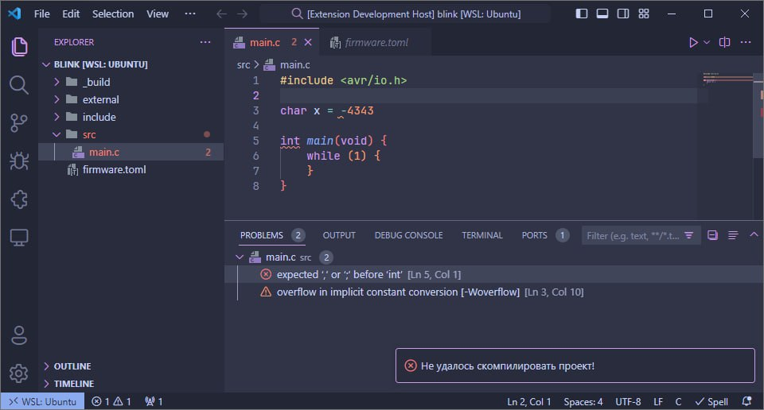

Лабораторная платформа для организации полнофункциональной разработки под микроконтроллеры AVR на языках программирования C, C++ и ассемблер.
Представляет из себя интеграционное решение, состоящие из самодостаточной системы сборки и расширения к текстовому редактору для её интеграции.
На данный проект находиться в активной разработки!
Особенности
- ✍️ Opinionated организация проекта с отсутствием boilerplate конфигурации
-
🏗️ Сборка с разрешением внешних зависимостей
-
Единое пространство имён
с отсутствием необходимости явных включений и хедер-файлов - Автоматический resolving включений в проект как локальных, так и удаленных
- Включение в прошивку ресурсов таких как, например, bitmap
-
Единое пространство имён
- 🔌 Загрузка прошивки на МК powered by avrdude